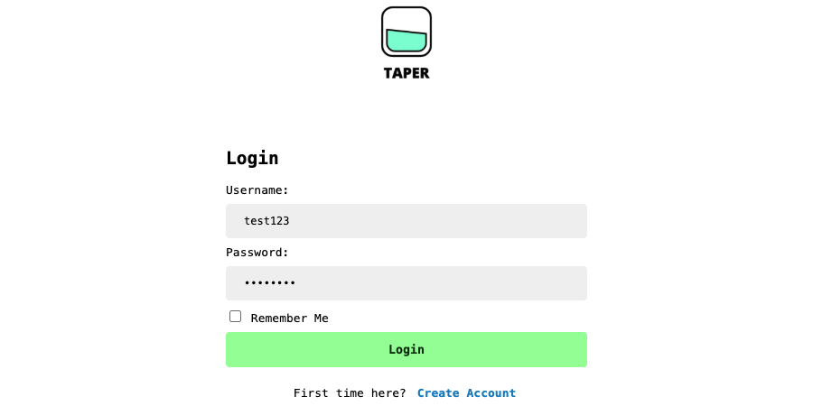
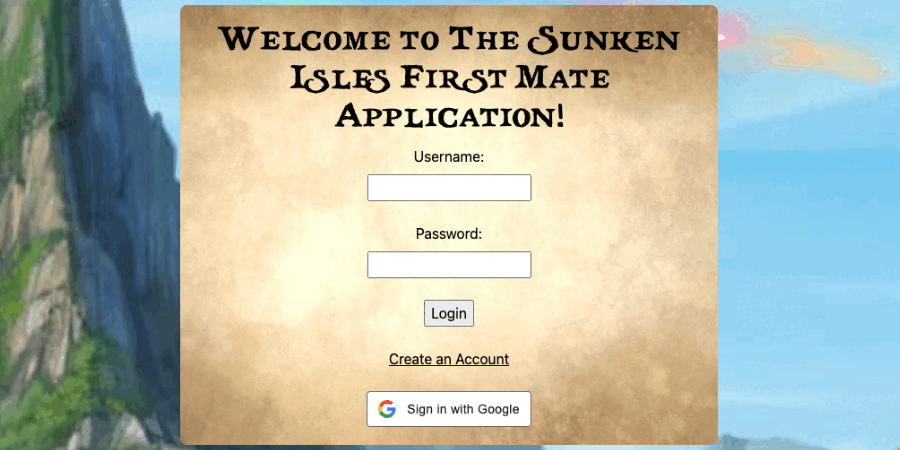

Grant Davis
Personal Projects
Commit Buddy (now a Chrome Extension!)
A simple JavaScript tool that dynamically creates Git commit commands based on user input.
Taper
An educational health and wellness web application that allows users to track their alcoholic unit consumption by entering in values for a drink’s ounces and alcohol-by-volume (ABV) percentage.
Turing Projects
Sunken Isles First Mate
A responsive web application that supports the Sunken Isles Dungeons & Dragons campaign and allows users to track their campaign progress, villager count, available resources, and owned items.
Habit Heroes API
A RESTful Ruby on Rails API designed to be called by the Habit Heroes React frontend application.